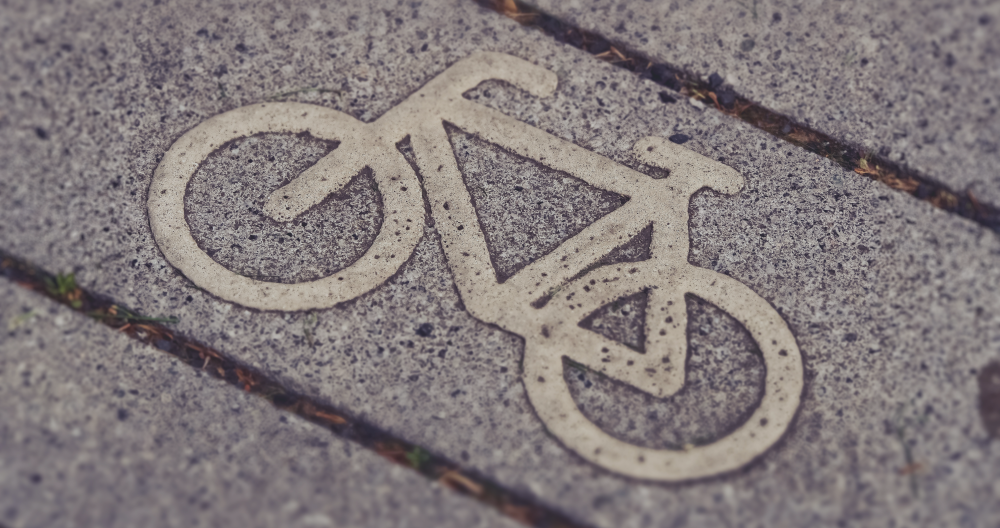
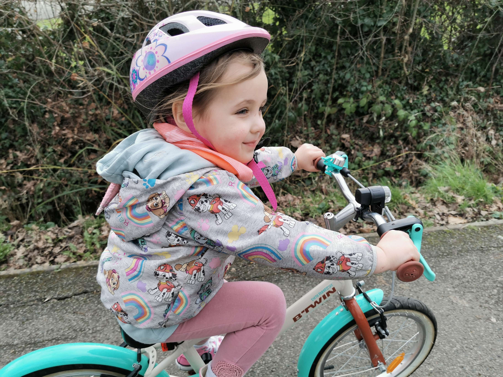

<section id="pledge">
  <div class="container">
    <div class="row border">
      <div class="col-md-12">

        <div id="pledge-slider" class="block slider">
          
          <div class="centered">
            <h1 class="text-uppercase">{{ page.title}}</h1>
            <br>
            {% if page.subtitle %}
            <h4>{{ page.subtitle }}</h4>
            {% endif %}
          </div>
        </div>
        <!--This code below is valid only for very small screens-->
        <div class="slider-below block">
          <h1 class="text-uppercase center-block" style="color:#E4B363;">{{ page.title}}</h1>
          <br>
          {% if page.subtitle %}
          <h4 class="center-block" style="color:#E4B363;">{{ page.subtitle }}</h4>
          {% endif %}
        </div> 

        <div id="pledge-above-form" class="block">
          <p class="center-block"> Do you think you are ready for having some serious fun, become fitter and healthier, spare a considerable amount of money, improve societies and, why not, even save the planet? If so, you are in the right place!</p> 
          <p class="center-block">Perhaps not all journeys can be done on a bicycle, but with a combination of public transport, cycling and walking, one can get almost anywhere (we are living proof).</p>
          <h2 class="text-uppercase center-block">Sign our cycling pledge & ditch your car for a year</h2>
          <h4 class="center-block">Help us reach 1000 people <small>(12 people have pledged so far)</small></h4>
        </div>

        <div id="pledge-form" class="block">
          {% include pledge-form.html %}           
        </div>
      </div>

      <div class="col-md-12">
        <div id="pledge-after-form" class="block">
          <p class="center-block">P.S. As we are not proficient web developers (yet), and this is only a static website, we update the submission count manually and try to do this on a daily basis.</p>
          <h2 class="text-uppercase center-block">Meet the pledgers</h2>
        </div>  

        <div id="isla-img"> 
          
        </div>

        <div id="isla-text">
          <h3>Isla</h3>
          <p>This reasonably sweet bundle of joy (mother's words) is named Isla. She is a 4 year old girl that lives in the UK and has decided she would cycle all distances below 5 km. Isla has instructed her mother to accompany her on all journeys. Fortunately, Isla's mother supports this decision whole heartedly and even sometimes claims to have thought of the idea herself.</p> 
          <br>
          <p>Isla's mother is indeed very happy to be cycling more frequently now. Although she has no intention of giving up her car entirely, she is saving a fair amount of money on travel costs, and is very pleased with the exercise she is able to fit into her hectic day as she studies for a Ph.D. while maintaining a full time job. It is a decision that she feels has nothing but positive consequences, even if they do sometimes get horribly wet under a typical British downpour!
          </p> 
        </div>

        <!-- Code below valid for screen size below 992px-->
        
        <div id="isla-text1-small">
          <h3 class="center-block">Isla</h3>
        </div>

        <div id="isla-img-small"> 
          
        </div>

        <div id="isla-text2-small">
          <p class="center-block">This reasonably sweet bundle of joy (mother's words) is named Isla. She is a 4 year old girl that lives in the UK and has decided she would cycle all distances below 5 km. Isla has instructed her mother to accompany her on all journeys. Fortunately, Isla's mother supports this decision whole heartedly and even sometimes claims to have thought of the idea herself.</p> 
          <br>
          <p class="center-block">Isla's mother is indeed very happy to be cycling more frequently now. Although she has no intention of giving up her car entirely, she is saving a fair amount of money on travel costs, and is very pleased with the exercise she is able to fit into her hectic day as she studies for a Ph.D. while maintaining a full time job. It is a decision that she feels has nothing but positive consequences, even if they do sometimes get horribly wet under a typical British downpour!
          </p> 
        </div>

      </div> 
    </div>
  </div>
</section>
    

  


